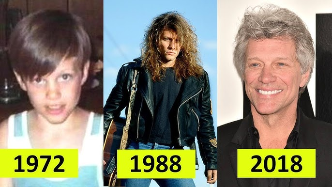

בון ג'ובי היא להקת רוק אמריקאית שהוקמה בשנת 1983 בהובלת ג'ון בון ג'ובי.
הלהקה ידועה בלהיטים כמו "Livin' on a Prayer" ו-"You Give Love a Bad Name",
והפכה לאחת מלהקות הרוק הנמכרות ביותר בכל הזמנים.
ג'ון בון ג'ובי, שהושפע מברוס ספרינגסטין, הוא לא רק מוזיקאי אלא גם פילנתרופ,
תומך במאבק בחסרי בית ובעוני באמצעות קרן "Jon Bon Jovi Soul Foundation".
התשוקה שלו לסיפורי חיים ושירות קהילתי מגדירה גם את המוזיקה שלו וגם את חייו האישיים.
תמונות:

משפחה:
שיר אהוב על ג'ון בון ג'ובי
אהבתם את העמוד? פרגנו בלייק!
לאתר, סרקו את הקוד.
תשובות לשאלות
שלושת ההבדלים העיקריים בין Web 1.0, Web 2.0 ו-Web 3.0